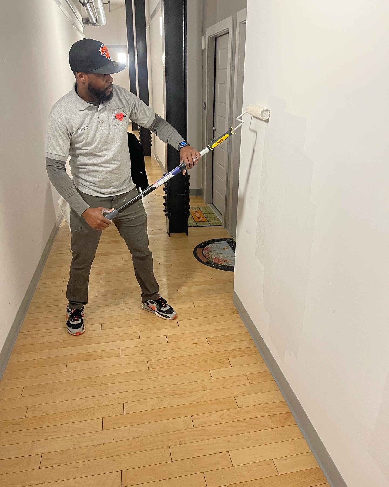
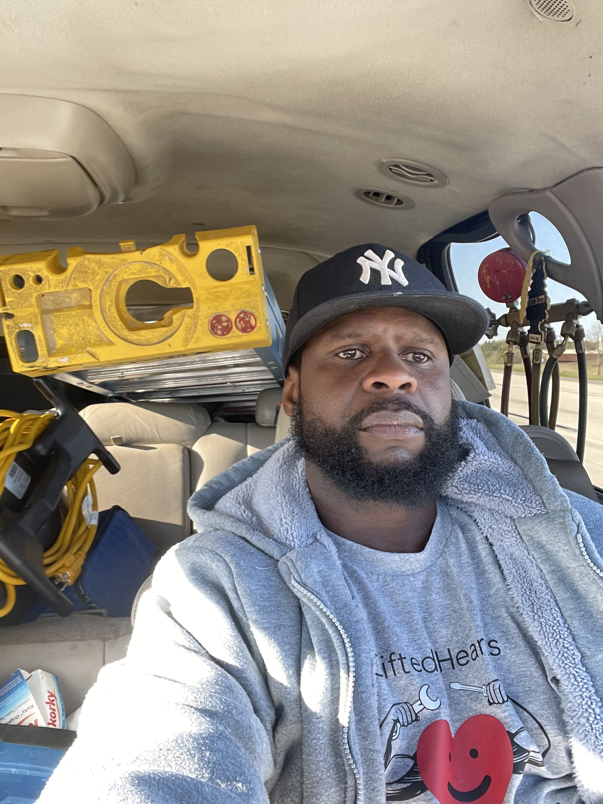
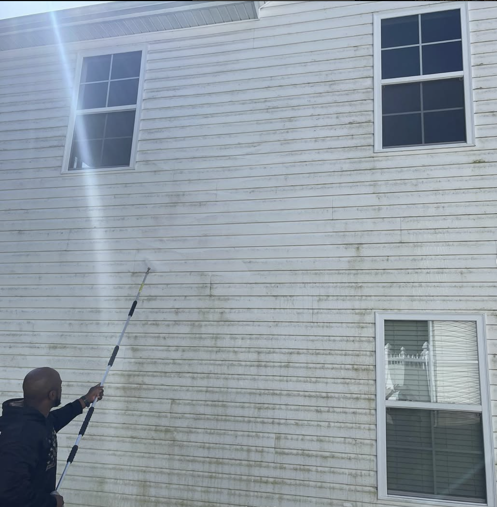

About Gifted Hearts LLC

Our Mission
At Gifted Hearts LLC, our mission is to serve with compassion, skill, and integrity. We provide professional, personalized care with the warmth of family and the heart of service.

Meet Our Founder
Carlos Worrell
Carlos is the founder and heart behind Gifted Hearts LLC. Known for his dependable work ethic and caring spirit, Los brings over 10 years of hands-on experience in the field. Certified in HVAC and raised in a large, loving family, Carlos understands the value of support, dedication, and genuine care.
Whether he's working with clients or leading his team, Los puts his heart into everything he does. His belief in family and community is what fuels the mission of Gifted Hearts every single day.

Our Vision
At Gifted Hearts LLC, we envision a future where every household and individual in our community experiences the highest level of compassionate, reliable, and expert care. Our goal is to become a trusted name across North Carolina, known not only for our professional excellence but also for the genuine relationships we build with those we serve. We believe that true service is rooted in love, integrity, and the willingness to go above and beyond—just like family. By blending certified expertise with heartfelt dedication, we aim to uplift, empower, and inspire our communities, one home at a time

Our Core Values
- ❤️ Compassion
- 🤝 Integrity
- 🌱 Growth
- 🎯 Dedication
We lead with empathy and kindness. Every service we provide is rooted in understanding and the genuine desire to care for others as if they were our own family.
Trust is earned through honesty, transparency, and doing what’s right — even when no one is watching. We hold ourselves to the highest ethical standards in every job, big or small.
We believe in continuous improvement, both personally and professionally. Whether it's learning new skills or finding better ways to serve our clients, we never stop growing.
Our commitment runs deep. We show up every day ready to give 110%, delivering consistent, quality work fueled by purpose and pride.
Connect With Us
Want to Learn More?
Visit our Services page or Get a Quote now!